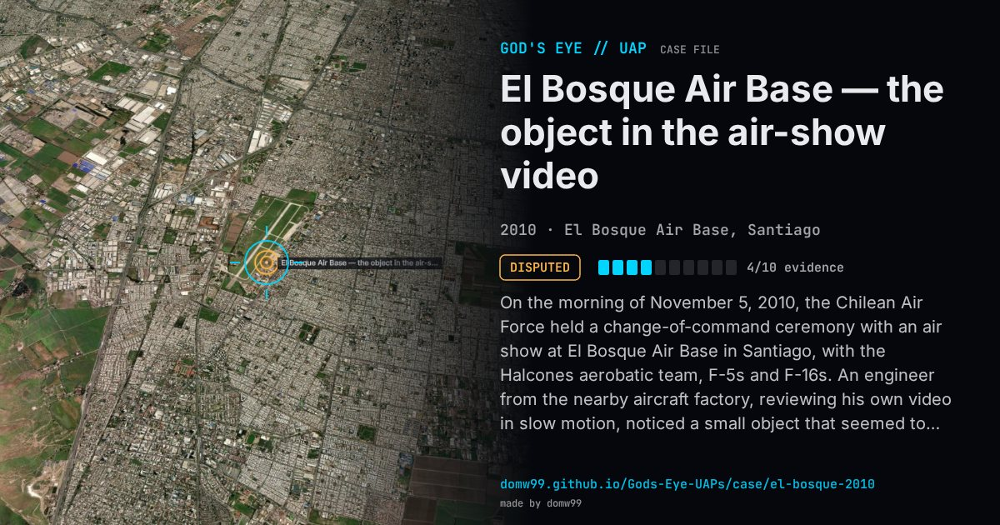

El Bosque Air Base — the object in the air-show video

On the morning of November 5, 2010, the Chilean Air Force held a change-of-command ceremony with an air show at El Bosque Air Base in Santiago, with the Halcones aerobatic team, F-5s and F-16s. An engineer from the nearby aircraft factory, reviewing his own video in slow motion, noticed a small object that seemed to loop near the jets, and handed it to CEFAA, the committee of the civil aviation directorate that studies aerial phenomena. CEFAA gathered seven videos from different spectators and, at a press conference on March 13, 2012, said an astronomer had ruled out a meteoroid, space debris, a bird and an aircraft, estimated the object’s speed at over 6,500 km/h and said the incident could not be explained scientifically. Nobody at the show had noticed anything. Critics pointed out that the speed holds only if the object was far away; analyses of the original frames by the HoaxKiller project and others found the shape and motion of an insect a few metres from the lens.
Explanation
Chile’s aerial-phenomena committee CEFAA said the object could not be explained and estimated a speed of thousands of km/h, which depends entirely on an assumed distance. Independent analysts, among them the HoaxKiller project and the neurologist Steven Novella, showed that the frames match an insect flying close to the camera, which nobody present would have noticed.
What was seen
Shape: A small dark object darting past the jets
Witnesses: Spectators at an air show who filmed it; nobody saw the object at the time
Duration: A fraction of a second per pass
Sources
- Leslie Kean — UFO caught on tape over Santiago air base (HuffPost, 2012)
- Steven Novella — UFO over Chilean air base (NeuroLogica, 2012)
- Kloptdatwel — the Chilean UFO video has six legs (2012)
Browse
- Chile
- 2010s
- Disputed
- Photo and video cases
- Official government documents
- Many independent witnesses
- Video footage